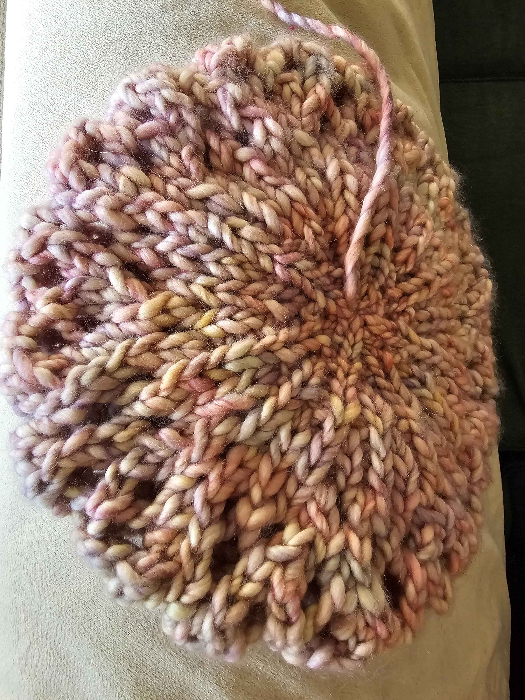

With a mind that often jumps between different interests and ideas, working with yarn gives me an opportunity to focus on something tangible while creating something unique. Whether I'm experimenting with new stitches, learning different techniques, or bringing a random idea to life, each piece represents a little bit of patience, curiosity, and personal growth. This page is a collection of those creations, both big and small, and a reminder that there's joy in the process, not just the finished product.
Knitting Work

Mini Knit Hat

Merino Wool Beret
Crochet Work

Giant Doily